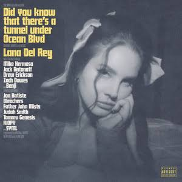

Meu primeiro post
Por: Paola Zuareth
Boas vindas ao meu blog! Aqui você ficará informado um pouco de Elizabeth Woolridge Grant, a artista que o mundo conheceu como Lana Del Rey. Com sua voz embriagante, letras poéticas e estética que mistura Hollywood dos anos 50, Americana e melancolia moderna, Lana criou um universo único que transcende a música!